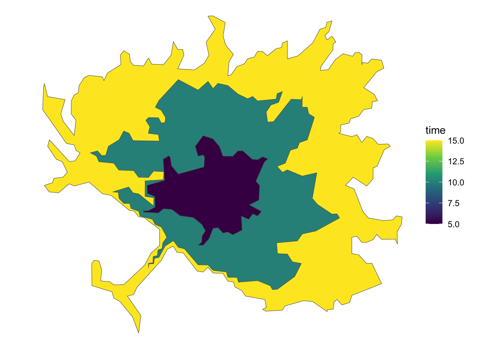
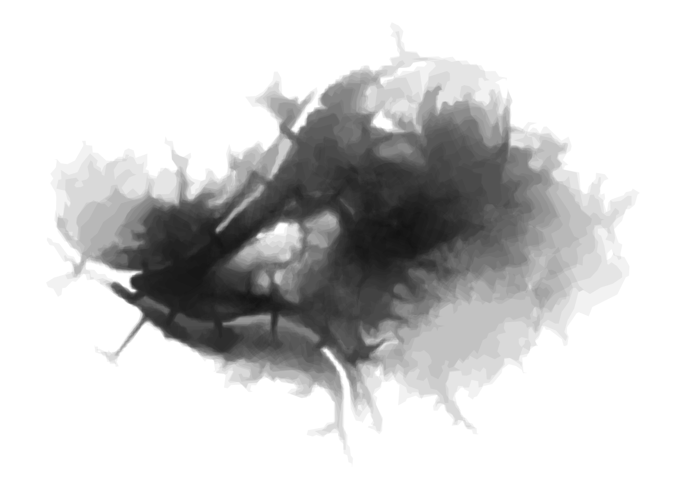
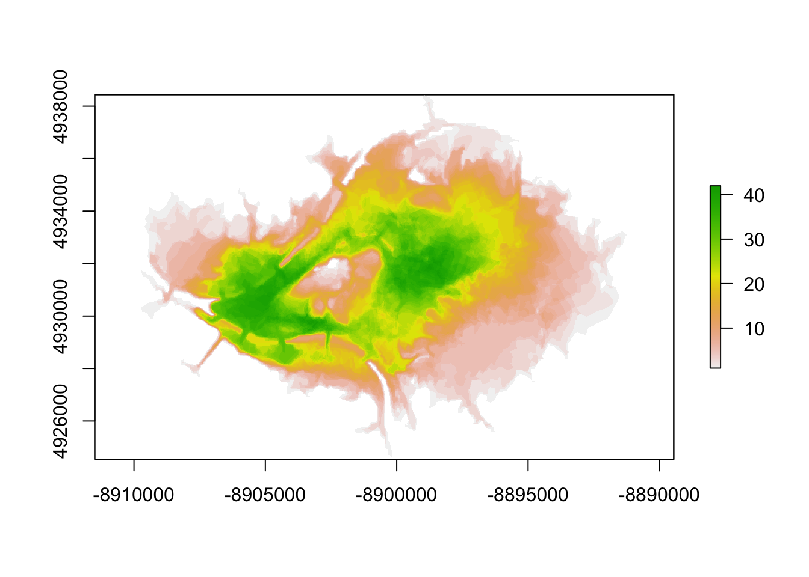

This is an interactive Leaflet map of Healthy Ride access in Pittsburgh. It counts how many Healthy Ride stations are within a 10 minute bike ride of a given location. This gives an estimation of how accessible the Healthy Ride service is in a given neighborhood (lighter green = more accessible). As you zoom in, individual bike stations will appear. Click the “full screen” button on the left to maximize your view.
There are some obvious cases (like the Wabash Tunnel) where the API doesn’t know that a bicyclist shouldn’t go in there, but overall it is accurate.
This map was built with the Mapbox API and was inspired by the Penn MUSA Masterclass 2020 talk that Kyle Walker gave.
Code
This loads the required libraries:
library(tidyverse)
library(janitor)
library(sf)
library(tigris)
library(raster)
library(fasterize)
library(mapboxapi)
library(mapdeck)
library(mapview)
library(leaflet)
library(leaflet.extras)
library(widgetframe)
options(tigris_use_cache = TRUE,
scipen = 999,
digits = 4)This finds the coordinates for the “middle” of the city and makes a base map that I will use later:
pgh_coords <- mb_geocode("Upper Hill, Pittsburgh, PA")
mapbox_map <- leaflet() %>%
addMapboxTiles(style_id = "streets-v11",
username = "mapbox") This reads in the dataframe with the station locations and the shapefile of the city boundaries.
stations <- read_csv("post_data/stations/healthy-ride-station-locations-2020-q2.csv",
col_types = cols(
`Station #` = col_character(),
`Station Name` = col_character(),
`# of Racks` = col_double(),
Latitude = col_double(),
Longitude = col_double()
)) %>%
clean_names() %>%
mutate(latitude = case_when(latitude < 0 ~ latitude * -1,
TRUE ~ latitude))
city_boundary <- st_read("post_data/Pittsburgh_City_Boundary-shp/City_Boundary.shp",
quiet = TRUE) %>%
st_transform("+proj=longlat +datum=WGS84") |>
filter(FID != 7) %>%
summarize() %>%
st_boundary() %>%
ms_simplify(keep = .02)
station_map <- mapbox_map %>%
mapdeck() %>%
add_polygon(data = city_boundary,
fill_opacity = 0,
stroke_width = 100,
stroke_colour = "#000000") %>%
add_scatterplot(data = stations,
radius = 100) %>%
mapdeck_view(location = c(pgh_coords[1], pgh_coords[2]), zoom = 11)Registered S3 method overwritten by 'jsonify':
method from
print.json jsonlitestation_mapBuild one isochrone
This takes the first station in the dataframe and uses the Mapbox API to make a test isochrone that shows how far a bicyclist can go in a given period of time (5, 10, 15 minutes).
test_isochrone_data <- stations %>%
slice(1) %>%
st_as_sf(coords = c("longitude", "latitude"), crs = 4326) %>%
mb_isochrone(profile = "cycling", time = c(5, 10, 15))
test_isochrone_map <- mapbox_map %>%
mapdeck() %>%
add_polygon(data = test_isochrone_data,
fill_colour = "time",
fill_opacity = 0.5,
legend = TRUE) %>%
add_scatterplot(data = stations %>%
slice(1) %>%
st_as_sf(coords = c("longitude", "latitude"), crs = 4326),
radius = 100,
fill_colour = "#ffffff") %>%
mapdeck_view(location = c(pgh_coords[1], pgh_coords[2]), zoom = 11)
test_isochrone_mapThe same graph can be made in ggplot2:
test_isochrone_data %>%
ggplot() +
geom_sf(aes(fill = time)) +
scale_fill_viridis_c() +
theme_void()
This calculates the isochrones for all the stations and transforms them into a projected coordinate system:
station_isochrone <- stations %>%
st_as_sf(coords = c("longitude", "latitude"), crs = 4326) %>%
mb_isochrone(profile = "cycling", time = c(10)) %>%
st_transform(3857)This shows the overlap between all the isochrones. Interesting to look at, but not very informative.
station_isochrone %>%
ggplot() +
geom_sf(fill = "black", lwd = 0, alpha = .05) +
theme_void()
Build Raster
This builds a raster object that calculates how many isochrones overlap on a given area:
#raster
polygons_proj <- station_isochrone %>%
mutate(test_id = 1) %>%
filter(time == 10) %>%
st_transform(3857)
template <- raster(polygons_proj, resolution = 25)
raster_surface <- fasterize(polygons_proj, template, field = "test_id", fun = "sum")
raster_values <- tibble(values = values(raster_surface)) %>%
filter(!is.na(values)) %>%
distinct(values) %>%
pull(values)
plot(raster_surface)
Build interactive Map
This builds out the interactive map using leaflet and Mapbox libraries:
custom_pal <- colorNumeric("viridis",
#0:max_bike_stations,
raster_values,
na.color = "transparent")
popup_labels <- sprintf("%s
<br>Number of bike racks: %s",
stations$station_name, stations$number_of_racks) %>%
map(htmltools::HTML)
health_ride_icon <- makeIcon(
iconUrl = "https://healthyridepgh.com/wp-content/uploads/sites/3/2019/05/NEXTBIKE-LOGO-01.png",
#iconUrl = "https://healthyridepgh.com/wp-content/uploads/sites/3/2016/09/Healthy-Ride-Logo.Stacked-01.png",
iconWidth = 50, iconHeight = 50,
iconAnchorX = 0, iconAnchorY = 0
)
station_heatmap <- mapbox_map %>%
addPolygons(data = city_boundary,
opacity = 1,
color = "black",
fillColor = "#ffffff",
group = "City boundary") %>%
addRasterImage(raster_surface, colors = custom_pal, opacity = .75,
group = "Raster") %>%
addLegend(pal = custom_pal,
values = raster_values,
title = "Number of stations<br>within 10-minute bike ride") %>%
addMarkers(data = stations, lng = ~longitude, lat = ~latitude,
popup = popup_labels,
icon = health_ride_icon,
clusterOptions = markerClusterOptions(),
group = "Stations") %>%
addLayersControl(overlayGroups = c("City boundary", "Raster", "Stations"),
options = layersControlOptions(collapsed = FALSE)) %>%
addFullscreenControl() %>%
setView(lng = pgh_coords[1], lat = pgh_coords[2], zoom = 12)
frameWidget(station_heatmap, options=frameOptions(allowfullscreen = TRUE))